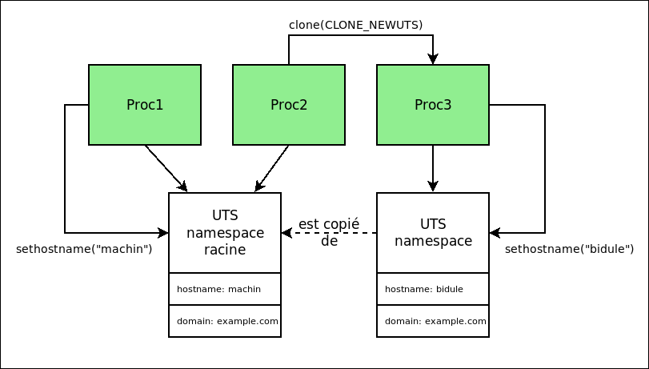

A l'aide du mécanisme de namespace de Linux, il est possible de controller les resources visibles d'un processus et de l'isoler encore un peu plus.
Les namespaces sont organisés sous forme d'arbre, un namespace hérite (dans la plupart des cas) des propriétés de leur parent.
La commande unshare permet de controller la création de namespaces
lors de la création d'un processus (man unshare pour un exemple
d'utilisation). En fonction des options les droits root peuvent être
nécessaires (l'option --map-root-user permet généralement de s'en passer).
Par exemple pour lancer un shell complètement isolé de ses namespaces parents :
% unshare --mount --uts --ipc --net --pid --fork --user --map-root-user bash
Sous le capot, la commande unshare utilise l'appel système clone,
similaire à fork, mais qui permet de controller la création de nouveaux namespaces.

proc1 et proc2 partage le namespace UTS par défaut. Par contre proc3
dispose de son propre namespace, il peut modifier les propriétés associées
à ce namespace sans que les effets soient visibles des autres processus.
Le namespace UTS permet d'isoler les noms de machine et de domaine (hostname et domainname).
Essayer de changer le nom de la machine dans un shell possédant un nouveau
namespace UTS et vérifié que le namespace racine n'est pas impacté.
Utiliser la commande hostname pour voir et changer le nom de machine.
% sudo unshare --uts bash
Le namespace PID permet d'avoir une numérotation des processus distincte de celle de son namespace parent.
% unshare --fork --pid bash
% echo $$
% ps aux
Remarquer que la valeur $$ (PID du shell courant) vaut bien 1,
par contre la commande ps donne une valeur bien différente. En fait
la commande ps utilise le système de fichier /proc pour afficher le
listing des processus, qui est toujours celui du namespace racine.
Il est possible d'utiliser l'option --mount-proc qui montera le
système de fichier /proc correspondant au nouveau namespace PID
(cela créer aussi un namespace de type mount, mais plus la dessus
tout de suite après).
% unshare --fork --pid --mount-proc bash
% echo $$
% ps aux
Magie ! Seuls les processus enfants du shell sont maintenant affichés. avec la numérotation propre au namespace courant.
Le namespace mount permet (comme son nom l'indique) d'avoir des montages de systèmes de fichiers distinct du namespace parent.
Désarchiver busybox.tar.gz :
% tar xvfz busybox.tar.gz
Lancé un shell avec un namespace mount isolé et vérifier que le nouveau montage n'est visible que du shell:
% unshare --mount bash
% mount -o bind busybox /mnt
% ls /mnt
Si l'on veut que le répertoire busybox soit le
répertoire racine du shell, il faut utiliser la bonne vielle commande
chroot (ou pivot_root) :
% unshare -r chroot busybox sh
Le namespace mount permet simplement de rendre local au namespace toute
manipulation de montage avec la commande mount.
Le namespace net permet d'isoler l'ensemble des fonctionnalités réseau :
ifconfig ou ip)route)iptables)Shell 1:
% unshare -r -n bash
% ifconfig -a
% echo $$
Le nouveau namespace dispose d'une seule interface de type loopback désactivée. Il n'est pas possible d'y ajouter des interfaces physiques, mais on peut y ajouter des interfaces virtuelles de type veth. Ce type d'interface fonctionne comme un pipe où chaque extrémité est une interface réseau.
Shell 2:
% sudo ip link add veth0 type veth peer name eth0 netns ${PID_du_bash}
% sudo ifconfig veth0 10.1.1.1/24 up
Les interfaces sont crées par paire, veth0 est placée dans le namespace par
défaut tandis que eth0 est placée dans le namespace net du processus dont
le PID est donné en paramètre.
Shell 1:
% ifconfig -a
% ifconfig eth0 10.1.1.2/24 up
% ping 10.1.1.1
% python -m SimpleHTTPServer
La nouvelle interface eth0 est maintenant visible dans le shell isolé
et est configurable avec une IP et un masque.
Shell 2 (ou dans un navigateur):
% route -n
% curl http://10.1.1.2:8000
Le service déployé dans le shell isolé est accessible au travers de
l'interface veth0 car une route est automatiquement créée pour le
sous-réseau 10.1.1.0.
Les fonctionnalités d'isolation de processus sont directement fournit par le noyaux sans outils supplémentaires. Mais l'isolation directe à partir de namespaces est extrêmement compliqué à configurer, les gestionnaires de conteneurisation (LXC, Docker, rt) permettent de grandement simplifier ce travail.